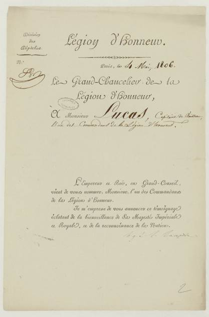

Île Lucas – Lucas Island

LUCAS, J.-J.-E. (23 octobre 1805) Captain Lucas’s Report Concerning The Loss Of The Vessel Redoutable At The Battle Of Trafalgar. https://www.napoleon.org/en/history-of-the-two-empires/articles/captain-lucass-report-concerning-the-loss-of-the-vessel-redoutable-at-the-battle-of-trafalgar/.